-
TreSensa documentation 2014 Documenting the TreSensa Game Engine (TGE) Made with JavaScript/HTML5 using TreSensa Game Engine
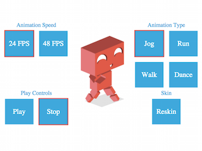 -
jQuery demo: Browser Pong 2014 Building Pong out of browser elements Made with JavaScript + jQuery + HTML/CSS
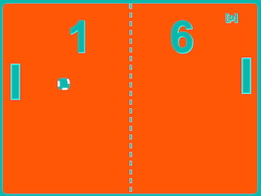 -
Rifftide 2014 Exploratory musical surfing game Made with openFrameworks
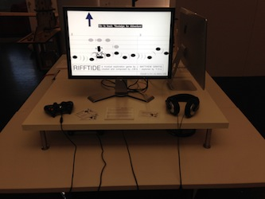 -
The Doorway Experience 2014 Inhabit a tall person (live the dream) Made with Unity3D + Oculus Rift
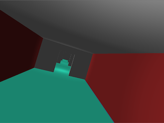 -
Dust in the Wind 2014 Surrealist Oculus Rift game-like Made with Unity3D + Oculus Rift
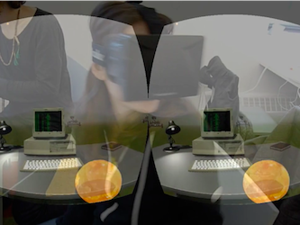 -
SO 2: Michael Kahane's Defection 2013 Four-player cooperative space combat game Made with openFrameworks
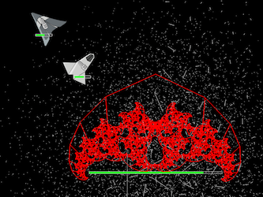 -
Killer Riff [early prototype] 2013 Exploratory musical puzzle/platforming game Made with openFrameworks
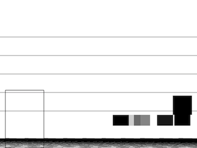 -
New World Symphony - Breath and Brass 2013 Code interprets music/musicians to create live visuals in concert Made with openFrameworks + Arduino
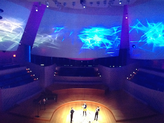 -
NBCUniversal - Super Sack Race 2013 Hop in the sack in this Summer Camp challenge on your phone Made with JavaScript/HTML5 using TreSensa Game Engine
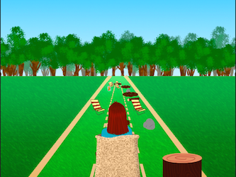 -
What Lies Beyond 2013 Profoundly unofficial sequel to Super Hexagon Made with openFrameworks

-
Dicksit [prototype] 2013 Please don't watch this game show with your family Made with Node.js + WebSockets + HTML/CSS + Twitter + 4chan
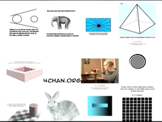 -
Don't Play Me Bro [prototype] 2013 Aggressively autonomous game-like Made with openFrameworks
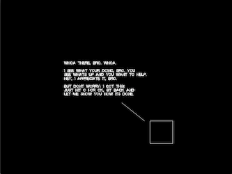 -
Experiments in Unity3D 2013 Silly vignettes, impossible gameplay Made with Unity3D
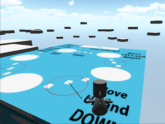 -
Space Odyssey [prototype] 2013 Four-player cooperative space combat browser game Made with JavaScript using Processing.js
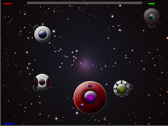 -
Space Pollution Needs Solution [prototype] 2013 In space, no one can see you litter, but you might die Made with Processing
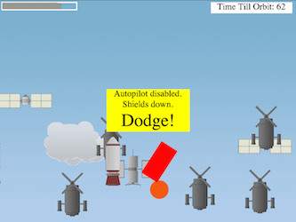 -
Art Thief: Training Grounds 2012 Stylish action game, cape simulator Made with openFrameworks
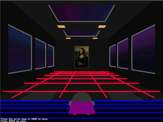 -
How to Play 2012 A game about following instructions Made with Processing
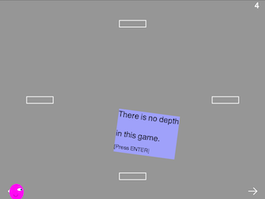 -
Arduino Invader 2012 Real players make their own controllers Made with Processing + Arduino
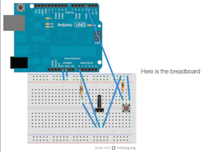 -
Platformal Ware 2011 Platforming game with original music Made with GameMaker
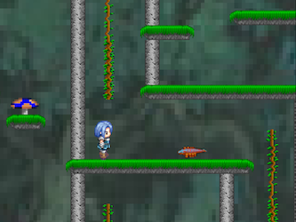
Hi, my name is Matt, and I design and develop playful interactive experiences. With degrees from St. John's College and Parsons The New School for Design, my creative and technological background is weird, wonderful, and well-rounded, and emphasizes these things:
- Critical thinking and logic
- Collaboration
- Adaptability
- Intellectual strength
- Leadership
- Self-motivation
- Imagination
I use a multidisciplinary skill set to make all kinds of things. For example, I hand-coded this website (read about it). My work is about:
exploration and experimentation, creativity, reflection, reaction, and delight.
I make physics systems for fun, but don't hold it against me. I'm also a passionate musician and writer. Contact me about freelance or consulting opportunities or just to say hi.